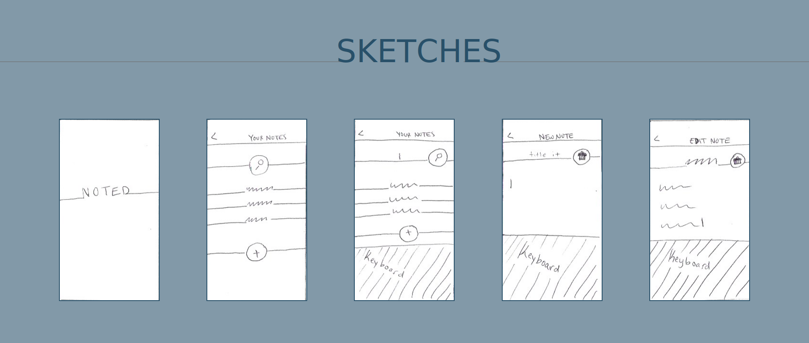
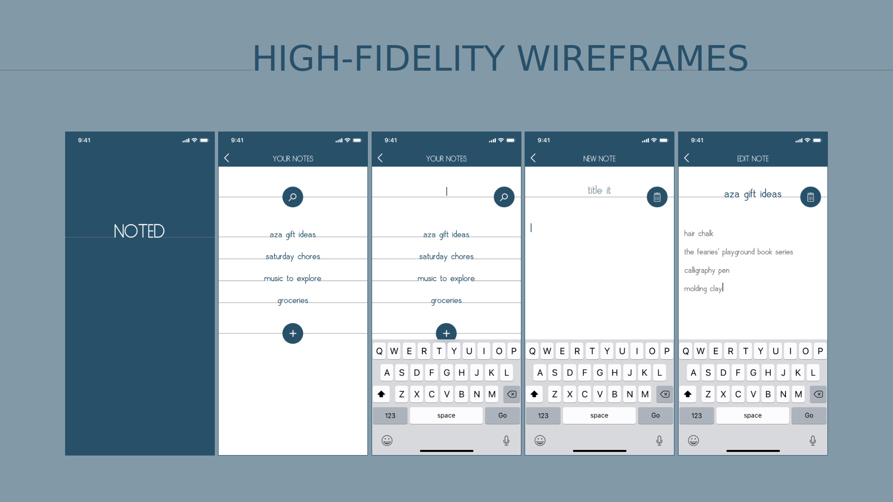
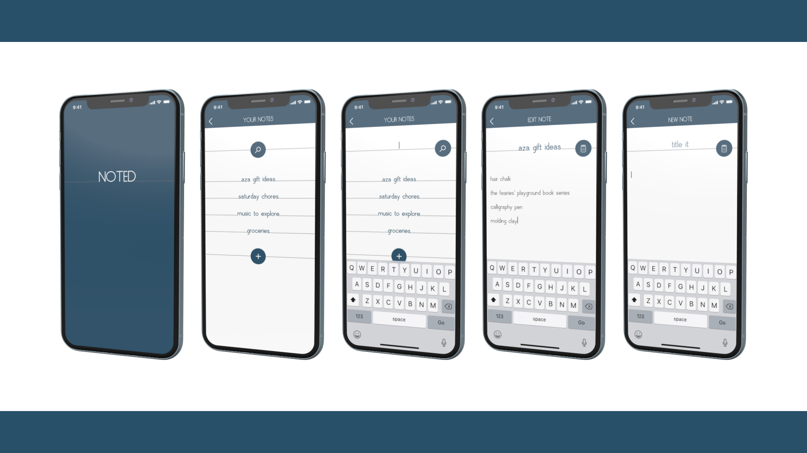

Noted
Objective
Produce five high-fidelity screens for a note-taking app in a pinch, designing with function most in mind and following the motto "less, but better."
Challenge
This client has not worked with a UI Designer before, and so has not prepared any of the information normally recieved regarding UX deliverables. Since the request was urgent, I'd need to work within this constraint.
My Process
Research
A quick Google search of existing note-taking apps gave me ideas on what to include and what to exclude in my own app.
What Fit
After checking out the results of my "best note-taking apps of 2020" Google search, I had decided on some key features that felt necessary to my app.
- the ability to view all notes on one screen
- the ability to search for a specific note
- the ability to add new notes with custom titles and content
- the ability to delete notes
What Didn't Fit
This research also demonstrated some design decisions that I decided would not lend to meeting the "less, but better" requirements of this app, and I decided to stay away from loud and excessive colors, and unecessary features such as checkboxes, sharing, or marking as important.
Ideate
Now that I knew the key features, I brainstormed the design aspects of the app and came up with a foundation rooted in Functionalism to build upon.
- a color palette representative of paper
- typography that refelected handwriting
- clean and basic minimalism
Taking these to pen and paper, I produced the prelimary screen designs.
Design
My design process took place in Adobe XD. Only needing to produce five screens, I was able to move through low-, mid-, and high-fidelity wireframes in not time.
Share
I then took a few moments to reach out to friends and family who happened to be online at that time, because who better to provide feedback than your everyday person seeking organization? Overall the response was positive, though one response let me know that my app was too minimal.
Refine
Making a few tweaks in the way that I applied the colors helped the feel of the app go from boring to minimal yet appealing, and viola! The five high-fidelity wireframes were ready in plenty of time.
Retrospective
What Worked
I was pretty pleased overall with the results of this project in a few ways:
- my time-management skills kicked in and really performed, as I tend to do best with deadlines, and this reminded me to always set deadlines for myself moving forward
- after a little tweaking, I felt confident that I met the requirements of keeping it basic yet appealing, and one way I did this was by digitally representing the real-world process of note-taking through my paper-like design and use of organic-looking typography
What Didn't
Life is a balancing act, in all things, and often I find I have to let the problem swing in both directions before I settle in the middle. This proved true for me yet again with this app. Seeking to fulfill the "less, but better" aim of Functionalism, I ended up inthe extreme of too basic and very boring. Luckily this was a quick and easy fix in this situation, and I learned a little more about how to find balance within the art of design.